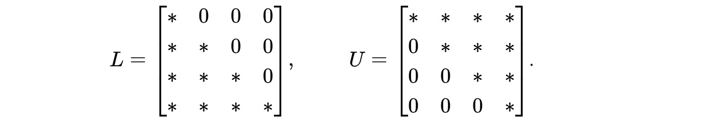

Print preview
Worksheet \(\S 3.1\text{:}\) Invertible Matrices and Gaussian Elimination
2. Triangular Matrices.

3. Activity: Gaussian Elmination and Matrix Multiplication.
This activity explores how the row operations of scaling, interchange, and replacement can be performed using matrix multiplication.
As an example, we consider the matrix
\begin{equation*}
A = \left[\begin{array}{rrr}
1 \amp 2 \amp 1 \\
2 \amp 0 \amp -2 \\
-1 \amp 2 \amp -1 \\
\end{array}\right]
\end{equation*}
and apply a replacement operation that multiplies the first row by \(-2\) and adds it to the second row. Rather than performing this operation in the usual way, we construct a new matrix by applying the desired replacement operation to the identity matrix. To illustrate, we begin with the identity matrix
\begin{equation*}
I = \begin{bmatrix}
1 \amp 0 \amp 0 \\
0 \amp 1 \amp 0 \\
0 \amp 0 \amp 1 \\
\end{bmatrix}
\end{equation*}
and form a new matrix by multiplying the first row by \(-2\) and adding it to the second row to obtain
\begin{equation*}
R = \begin{bmatrix}
1 \amp 0 \amp 0 \\
-2 \amp 1 \amp 0 \\
0 \amp 0 \amp 1 \\
\end{bmatrix}.
\end{equation*}
-
Describe the relationship between \(R\) and \(R^{-1}\) and use the connection to replacement operations to explain why it holds.
-
Other row operations can be performed using a similar procedure. For instance, suppose we want to scale the second row of \(A\) by \(4\text{.}\) Find a matrix \(S\) so that \(SA\) is the same as that obtained from the scaling operation. Why is \(S\) invertible and what is \(S^{-1}\text{?}\)
-
Finally, suppose we want to interchange the first and third rows of \(A\text{.}\) Find a matrix \(P\text{,}\) usually called a permutation matrix that performs this operation. What is \(P^{-1}\text{?}\)
-
The original matrix \(A\) is seen to be row equivalent to the upper triangular matrix \(U\) by performing three replacement operations on \(A\text{:}\)\begin{equation*} A = \left[\begin{array}{rrr} 1 \amp 2 \amp 1 \\ 2 \amp 0 \amp -2 \\ -1 \amp 2 \amp -1 \\ \end{array}\right] \sim \left[\begin{array}{rrr} 1 \amp 2 \amp 1 \\ 0 \amp -4 \amp -4 \\ 0 \amp 0 \amp -4 \\ \end{array}\right] = U. \end{equation*}Find the matrices \(L_1\text{,}\) \(L_2\text{,}\) and \(L_3\) that perform these row replacement operations so that \(L_3L_2L_1 A = U\text{.}\)
-
Explain why the matrix product \(L_3L_2L_1\) is invertible and use this fact to write \(A = LU\text{.}\) What is the matrix \(L\) that you find? Why do you think we denote it by \(L\text{?}\)
Solution.
-
Performing the matrix multiplication, we find that\begin{equation*} RA = \left[\begin{array}{rrr} 1 \amp 0 \amp 0 \\ -2 \amp 1 \amp 0 \\ 0 \amp 0 \amp 1 \\ \end{array}\right] \left[\begin{array}{rrr} 1 \amp 2 \amp 1 \\ 2 \amp 0 \amp -2 \\ -1 \amp 2 \amp -1 \\ \end{array}\right] = \left[\begin{array}{rrr} 1 \amp 2 \amp 1 \\ 0 \amp -4 \amp -4 \\ -1 \amp 2 \amp -1 \\ \end{array}\right]\text{.} \end{equation*}
-
We know that \(R\) is invertible because it is a lower triangular matrix whose diagonal entries are all 1. We find that \(R^{-1} = \left[\begin{array}{rrr} 1 \amp 0 \amp 0 \\ 2 \amp 1 \amp 0 \\ 0 \amp 0 \amp 1 \\ \end{array}\right] \text{,}\) which can be verified.
-
But we can see this in another way as well. The replacement operation is reversible; that is, multiplying the first row by \(-2\) and adding it to the second row can be undone by multiplying the first row by \(2\) and adding it to the second row.
-
We find that\begin{equation*} S = \begin{bmatrix} 1 \amp 0 \amp 0 \\ 0 \amp 4 \amp 0 \\ 0 \amp 0 \amp 1 \\ \end{bmatrix},~~~ S^{-1} = \begin{bmatrix} 1 \amp 0 \amp 0 \\ 0 \amp \frac14 \amp 0 \\ 0 \amp 0 \amp 1 \\ \end{bmatrix}. \end{equation*}This makes sense because scaling a row by \(4\) can be undone by scaling the same row by \(\frac14\text{.}\)
-
We find that\begin{equation*} P = \begin{bmatrix} 0 \amp 0 \amp 1 \\ 0 \amp 1 \amp 0 \\ 1 \amp 0 \amp 0 \\ \end{bmatrix}. \end{equation*}Moreover, \(P=P^{-1}\) because we can undo the interchange operation by repeating it.
-
Continuing with the Gaussian elimination algorithm, we have \(L_1 = R\text{,}\) as above,\begin{equation*} L_2 = \left[\begin{array}{rrr} 1 \amp 0 \amp 0 \\ 0 \amp 1 \amp 0 \\ 1 \amp 0 \amp 1 \\ \end{array}\right],~~~ L_3 = \left[\begin{array}{rrr} 1 \amp 0 \amp 0 \\ 0 \amp 1 \amp 0 \\ 0 \amp 1 \amp 1 \\ \end{array}\right]\text{.} \end{equation*}we then have \(L_3L_2L_1A = U\text{.}\)
-
Each of the matrices \(L_1\text{,}\) \(L_2\text{,}\) and \(L_3\) is invertible so their product will be as well. Since \((L_3L_2L_1)A = U\text{,}\) we have \(A = (L_3L_2L_1)^{-1}U\text{.}\) Moreover, \(L = (L_3L_2L_1)^{-1} = L_1^{-1}L_2^{-1}L_3^{-1}\) gives \(L=\left[\begin{array}{rrr} 1 \amp 0 \amp 0 \\ 2 \amp 1 \amp 0 \\ -1 \amp -1 \amp 1 \\ \end{array}\right]\text{.}\) Notice that this matrix is lower triangular so we call it \(L\text{.}\)